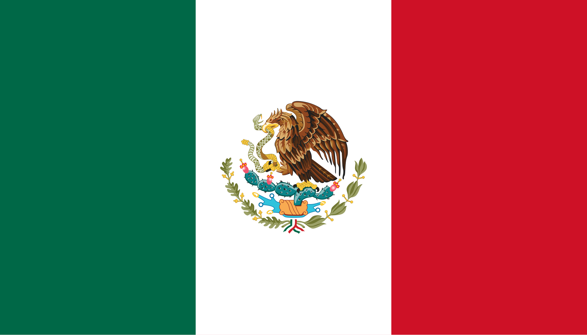
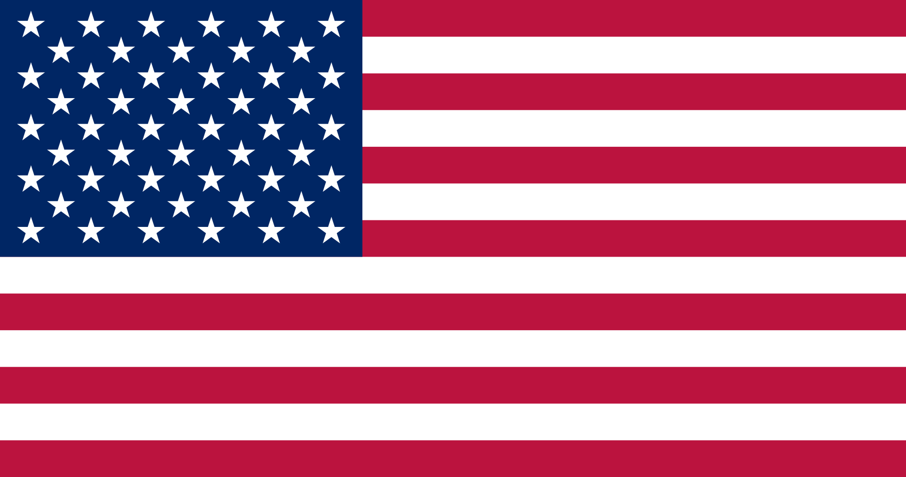

⚽ 0
✖
TITLE
This a text example.
The first time Mexico staged world football’s showpiece event was in 1970. With an inspired Pele in their ranks,
champions Brazil dazzled the watching world in a tournament that featured legends such as Franz Beckenbauer as well as a series of historic games,
like the semi-final between Italy and West Germany.
Sixteen years later, in 1986, Mexico was again the host, this time witnessing the exaltation of Diego Armando Maradona. The Argentinian star was at the peak of
his powers at that tournament, steering La Albiceleste to their second world title with victory over West Germany.
The 1994 World Cup proved to be a seminal moment in the nation’s footballing history. In a tournament that saw Brazil lift the trophy for the first
time since 1970, fans - a record total attendance of 3,587,538 spectators, in fact - gathered to witness the likes of Roberto Baggio, Romario, Hristo Stoichkov,
Gheorghe Hagi, Dennis Bergkamp and many others.
The creation of its domestic club competition Major League Soccer (MLS) soon followed, with the inaugural league match taking place just two years later in the spring of 1996.
'Soccer' culture has grown immensely in the USA since the 1994 World Cup. In a country that contains a multitude of backgrounds, cultures, heritages, football has found its home
and its place in society.
Canada has qualified for two World Cup finals in their history: in 1986, when the tournament was hosted by fellow 2026 co-hosts Mexico, and Qatar 2022.
Just as hosting the 1994 World Cup proved to be a turning point in the trajectory of football in the USA, 2026 will be pivotal in developing a lasting legacy for the future of Canadian football.
The newly-formed Canadian Premier League was founded in 2017 and played its first season in 2019 featuring eight clubs. The league will form an important part of
the roadmap to the FIFA World Cup 2026. There are also three Canadian teams that compete in the Major League Soccer in Montreal Impact, Toronto FC and Vancouver Whitecaps,
representing the three largest metropolitan areas.

